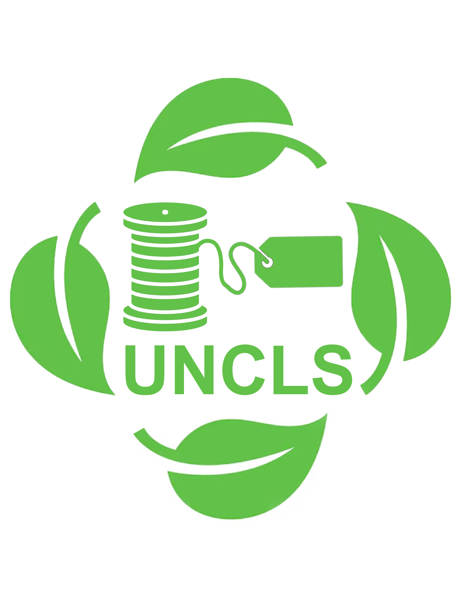

Featured grant
National Sustainable Grant
$10 billion total
Built for vintage clothing curators, repair operators, resale storefronts, and community sellers that keep usable garments in circulation.
- Repair tools and labor support
- Authentication systems and public trust tools
- Sorting, cleaning, and storage capacity
- Storefront rent, pop-up fees, and e-commerce access
